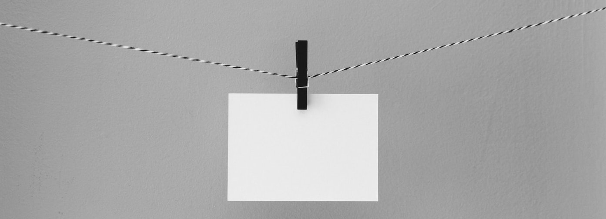

Puck.js One-Button Tracker
Turn your Puck.js into a simple one-button tracker. Every time you press the its button it will record when & for how long you pressed it.

So many use cases: Track allergies, your mood, your eating, how often you stand up. Only your imagination limits what you can track.
Every time you press the Puck.js button the One Button Tracker will register when & how long you pressed the button. You give those button presses meaning.
You could track discrete events or even make up your own morse code. Check out some examples.
No apps needed: Press the install button above, select your Puck.js and you're good to go. And downloading the data is just as easy.
Web Bluetooth currently only works in Chrome & Opera browsers. With them you can install the One Button app on your Puck.js and download the data right from this website. But no information is ever transmitted to the web. Whatever you track, it's between your Puck.js and your browser.
Everything is open source for you to tweak: The Puck.js with all of its hardware, firmware & software and this website is as well.
You can get involved! All the code etc. for the Puck.js are on GitHub. And so is the code for this website & the One Button Tracker.